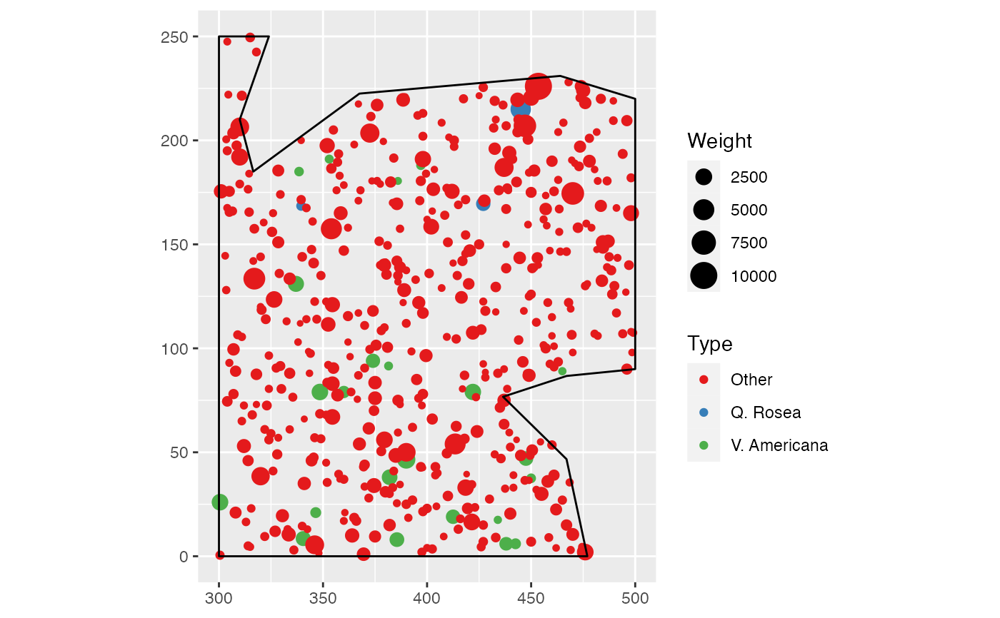

autoplot.RdS3 methods for the autoplot generic.
# S3 method for envelope autoplot(object, ..., ObsColor = "black", H0Color = "red", ShadeColor = "grey75", alpha=0.3, main = NULL, xlab = NULL, ylab = NULL, LegendLabels = c("Observed", "Expected", "Confidence\n enveloppe"))
| object | An object to be plotted. |
|---|---|
| ... | Extra arguments, currently unused. |
| ObsColor | The color of the line representing observed values of the function. |
| H0Color | The color of the line representing the null hypothesis values of the function. |
| ShadeColor | The color of the confidence envelope. |
| alpha | The opacity of the confidence envelope, between 0 and 1. |
| main | The title of the plot. |
| xlab, ylab | The axes labels. |
| LegendLabels | A vector of characters. The first two items describe the observed and null-hypothesis curves, the last item the confidence interval. |
A ggplot object.
Eric Marcon <Eric.Marcon@ecofog.gf>
data(paracou16) # Keep only 20% of points to run this example X <- as.wmppp(rthin(paracou16, 0.2)) # Plot the envelope (should be 1000 simulations, reduced to 20 to save time) autoplot(KdEnvelope(X, ReferenceType="Q. Rosea", NumberOfSimulations=20))#> Generating 20 simulations by evaluating expression ... #> 1, 2, 3, 4, 5, 6, 7, 8, 9, 10, 11, 12, 13, 14, 15, 16, 17, 18, 19, 20. #> #> Done.